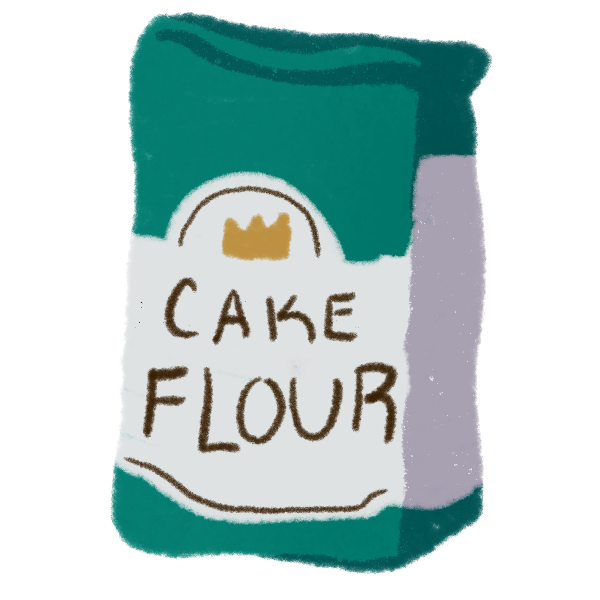
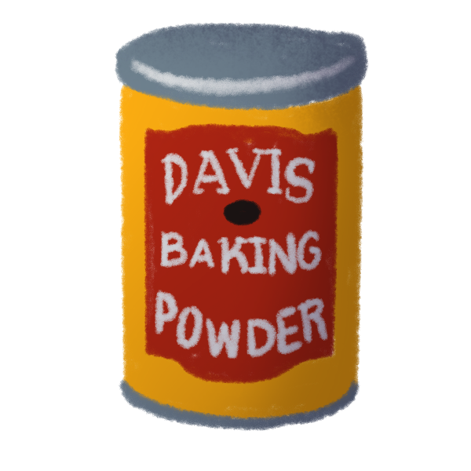
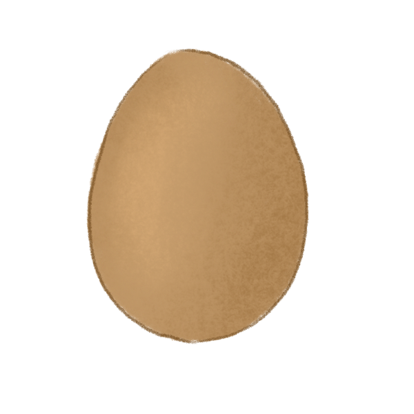
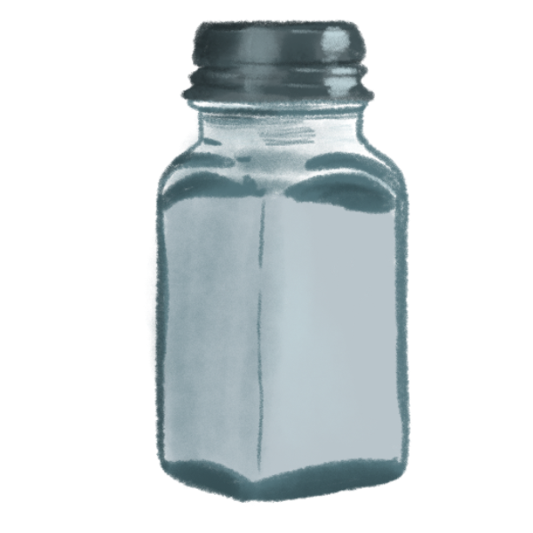
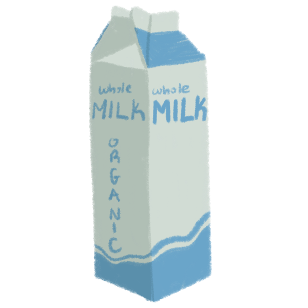
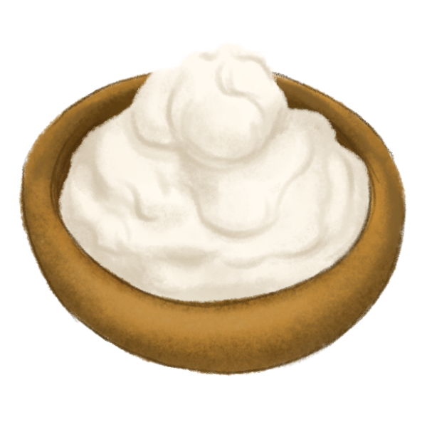
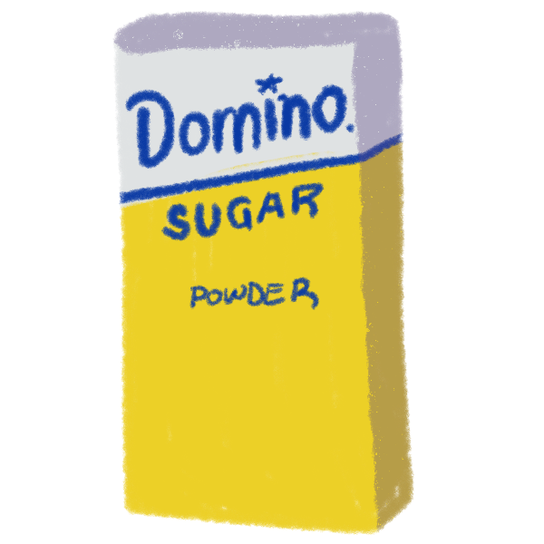
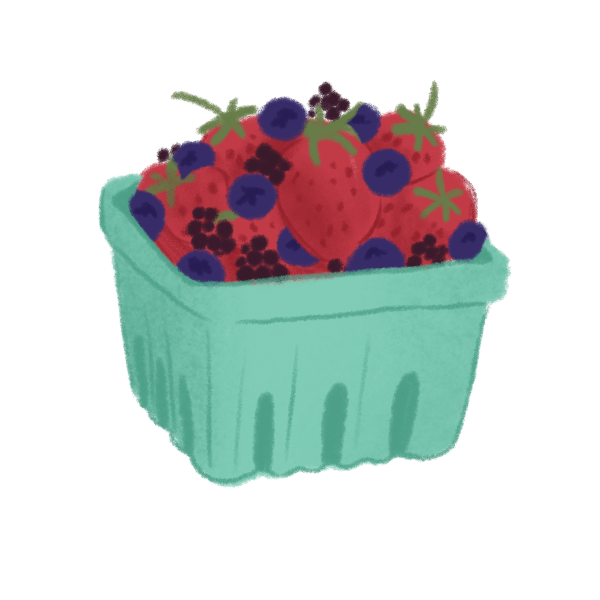
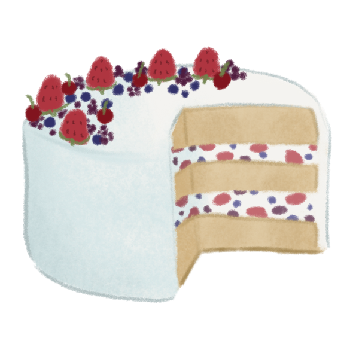

You can use either fresh fruit or a homemade jam. For the jam, cook down your fruit with granulated sugar, lemon zest and juice, and a tablespoon of cornstarch mixed with water to thicken it. Leftover jam can be kept in the refrigerated for a few days and used on toast, pancakes, or on a spoon.
In addition to vanilla, you can also add almond extract for a light nutty flavor that pairs great with berries.









1. Preheat oven to 350 degrees Fahrenheit. Grease and flour three 9" round cake pans. Line bottoms with parchment paper.
2. In a large mixing bowl, whisk cake flour, baking powder, baking soda, and salt. Set aside.
3. In a separate bowl, whisk buttermilk, oil, and 1 tablespoon of vanilla together. Set aside.
4. Using an electric mixer, beat butter until smooth. Then slowly add granulated sugar on low speed. Once combined, increase to medium speed for 4-5 minutes until the mixture is light in color and fluffy.
5. Add in eggs one at a time, scraping the sides and bottom of the bowl as needed.
6. Alternate between adding dry and wet ingredients in three rounds on low speed. Mix each addition until just combined, so as not to over mix the batter. Scrape sides and bottom of bowl to make sure everything is well combined.
7. Evenly divide batter between the three pans, smoothing the batter. Bake for 25-30 minutes before removing from the oven. Allow to cool in the pan for 20 minutes before transferring to wire rack.
1. In a large bowl, beat heavy cream until stiff peaks form. Be careful not to over mix, otherwise it'll become grainy. Tranfer to refrigerator.
2. Meanwhile, in a large bowl beat cream cheese until smooth. Add mascarpone, vanilla, and powdered sugar and mix on low speed until just combined. Stop adn scrape down bowl periodically.
3. Fold in whipped cream a third at a time, gently combining the two mixtures.
Place first cake rounded side down onto a flat serving plate. Evenly spread a 1/2 cup of the frosting onto the first layer before adding half of the berries on top. Cover the fruit with another scoop of frosting, spreading into one even layer. Place the second cake on top and repeat with the remaining berries. Finally, add the third cake upside down. Coat with a thin layer of frosting and chill for 15 minutes to seal any crumbs. Then, use the remaining frosting to cover the cake. Top with berries.
